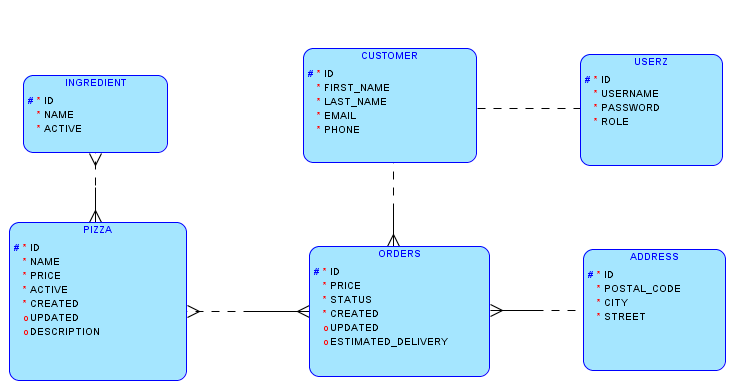

Objednávkový systém pro pizzerie - projekt DORDB
Autor: Rostislav Orság, Tomáš Roch
1. E-R diagram

2. Slovní popis dodatečných integritních omezení
2.1. Triviální integritiní omezení
- Telefonní číslo zákazníka se musí skládat pouze z číselných znaků
- Cena objednávek a jednotlivých pizz je kladné reálné číslo
- PSČ se skladá pouze z číselných znaků
- Datum vytvoření objednávky je dřívější než datum aktualizace a předpokádaného doručení
- Datum vytvoření pizzy je dřívější než datum aktualizace
- Množství jednotlivých položek objednávky je kladné číslo
2.1. Netriviální integritní omezení
- Pokud pizza nemá přiřazenou alespoň jednu aktivní ingredienci nelze jí přepnout do aktivního stavu(nelze jí
začít prodávat)
- Nelze vytvořit položku objednávky pokud je daná pizza neaktivní
3. Slovní návrh API rozhraní „business logiky“
Název: createOrder
Parametry: customerId, addressId, firstName, lastName, email, phone, postalCode, city, street,
items.
Popis: procedura vytvoří novou objednávku a sváže jí s adresou a zákazníkem. Dle jednotlivých
položek vypočítá celkovou cenu objednávky. Procedura umožňuje vytvoření objednávky pro již existujího
zákazníka/adresu nebo vytvoření nového zákazníka/adresy.
Název: registerCustomer
Parametry: username, password, firstName, lastName, email, phone
Popis: procedura zaregistruje zákazníka. Vytvoří mu uživatelský účet a následně jej sváže se
zákazníkem. Pokud se již data o zákazníkovy nachází v DB dojde pouze k vytvoření uživatelského účtu.
4. Pět slovně formulovaných dotazů nad schématem
- Prodeje pro všechny pizzy (počet prodaných ks a celkový zisk z prodeje pro dané pizzy) za dané období
- Seznam prvních deseti registrovaných zákazníků, kteří nejvíce utratily
- Seznam všech měst, ve kterých neregistrovaní zákaznící provedly alespoň jednu objednávku obsahující čtyřikrát
nejdažší pizzu z nabídky
- Seznam uživatelů, kteří si objednaly stejnou pizzu jako jiný konkrétní uživatel a jejich příjmení začíná
stejným písmenem
- Seznam registrovaných zákazníků, kteří provedly zrušení objednávky nebo čekají na doručení objednávky
5. Skript, který vytvoří databázové schéma odpovídající E-R diagramu
Skript: 05_db_schema.txt
6. Skript, který vytvoří v databázovém schématu dodatečná integritní omezení
Skript: 06_integritni_omezeni_z_bodu_2.txt
7. Skript, který naplní tabulky testovacími daty
Skript: 07_testovaci_data.txt
8. Skript, který provede postupně všechny navržené dotazy z bodu 4
Skript: 08_dotazy_z_bodu_4.txt
Výsledky: 08_vysledky_dotazu.txt
Porovnání: 08_porovnani.txt
9. Skript, který se pokusí porušit všechna dodatečná integritní omezení
Skript: 09_poruseni_omezeni.txt
Výstup: 09_vystup.txt
10. Skript pro vytvoření balíku (package) a procedur „business logiky“
Skript: 10_balik_a_procedury
11. Ověření procedur „business logiky“
Skript: 11_testovaci_skript_procedur.txt
Výstupy: 11_vystup.txt
Skript pro vyčištění databáze
Skript: drop.txt